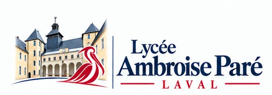

Aller au contenu

Mon parcours
Mon espace orientation
Seconde · Première · Terminale
Mon carnet
↗
Ouverture de ton espace orientation…
×
Active JavaScript pour utiliser les outils. Tu peux consulter
Parcoursup
,
Onisep
et
le site du lycée
.